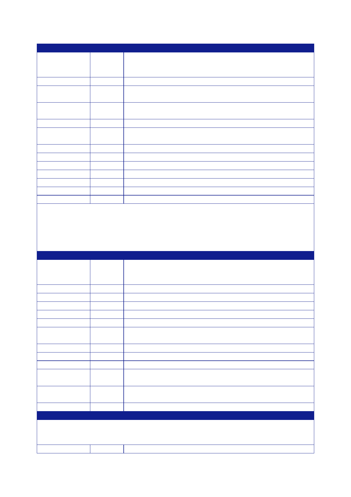

The Report
of the Iraq Inquiry
Baghdad
Parent
Department
or
Organisation
Number in
Comment
Baghdad
FCO
30 Includes
seconded staff from other government departments.
DFID
8 DFID core
staff, includes two members of staff on secondment
from
other
government departments and three on consultancy terms.
MOD
19 Eleven
working from the Embassy. Five working on capacity‑building
in
the Iraq
MOD and three visiting.
Police
Advisers
Consultants
15
Capacity‑building and advice.
15 Fourteen
working on capacity‑building programmes and one
visiting.
One
consultant seconded from the Department of Health.
No.10
1 Working
with the Iraqi Government Communications Directorate.
UKTI
1 Working
in the Embassy.
British
Council
Crown
Agents
1 Managing
a DFID project.
2 Providing
contracted services.
Frontier
Medical
2
Contracted to provide medical services.
LE
staff
Total
staff
36
116
These
figures do not include the static guard force employed to protect
Embassy (or Consulate)
premises or
the private security personnel responsible for personal
security.
The number
of consultants in Baghdad is temporarily lower than usual at the
moment and not
representative
of the overall commitment of UK resources in this area. The Police
Advisers include one
Canadian
national for whom we have responsibility.
Basra
Parent
Department
or
Organisation
Number in
Comment
Basra
FCO
14 Includes
seconded staff from other government departments.
FCO
contractors
2
DFID
1
DFID
contractors
9
Police
Advisers
15 Mostly
at Az Zubayr Regional Police Academy.
ArmorGroup
36 Most
working from MNF bases.
Police
Mentors
Crown
Agents
2
Frontier
Medical
2
LE
staff
22
LE
DFID
1
contractor
LE
ArmorGroup
10 Most
working from MNF bases.
Police
Total
staff
144
Kirkuk
There is
usually one UK‑based (FCO) member of staff, the Consul General.
From time to time, UK
staff from
elsewhere in Iraq make extended working visits to Kirkuk. There are
two LE staff members
employed in
Kirkuk.
Total
staff
3
(plus one
visiting)
400